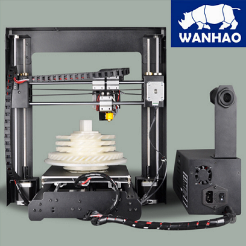

|  |
About
A robust and economical version of the Prusa i3, this machine is a great machine for a beginner. The printer comes in a fully assembled steel frame. The Duplicator i3 comes equipped with a cooling fan, gcode based micro-controller and a standard Heated Build Plate.
Specifications
| Printer type | FDM |
| Material | ABS, PLA, Exotics |
| Build volume | 20 x 20 x 18 cm |
| Min layer height | 100 microns |
| Extruder head | 1 |
| Open source | Only software |
| Can you use 3rd party material? | Yes |
| Heated platform | Yes |
| Filament diameter | 1.75 |
| On-printer controls | No |
| Connectivity | USB SD card |
User Manual
Follow the link below to the Wanhao i3 V2 user manual